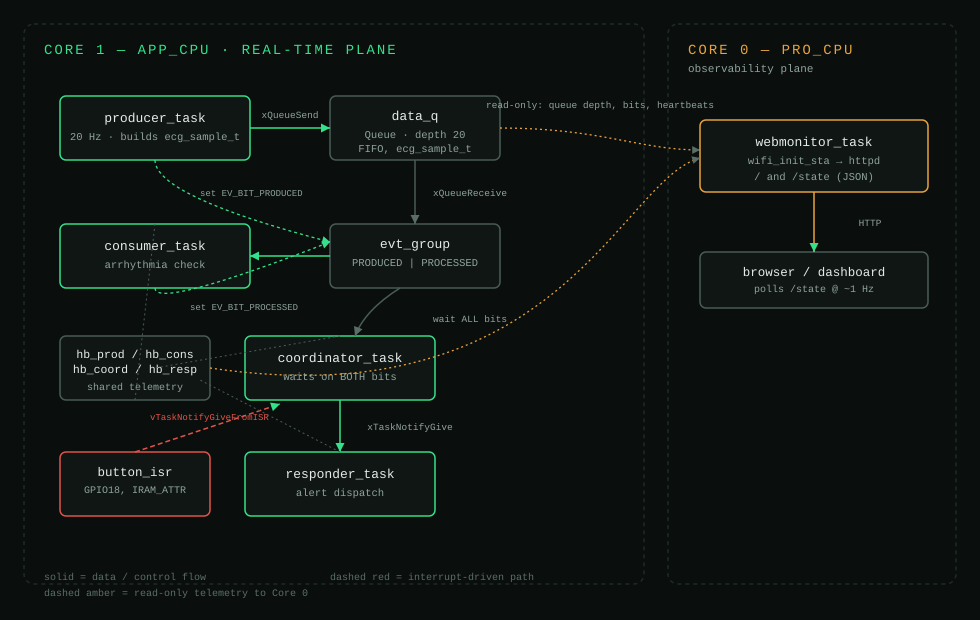

Cardiac Watch: a dual-core ECG telemetry pipeline on ESP32 / FreeRTOS
A producer/consumer pipeline that generates simulated ECG samples on one core, checks them for arrhythmia, and dispatches an alert through an event-group rendezvous — while a second core runs a live HTTP monitor without ever touching the timing-critical path.
Project overview
what it is, and why it's built this way
This is my App 5 submission built out into the final capstone spine. The board runs four
tasks on Core 1 that model a simplified cardiac monitor: producer_task
generates a simulated ECG sample at 20 Hz and pushes it into a queue,
consumer_task pulls each sample and runs a lightweight arrhythmia check,
and once both sides have touched a sample, coordinator_task treats that as
one completed monitoring cycle and hands off to responder_task, which is
responsible for dispatching the alert. A physical button on GPIO18 can also trigger the
responder directly through an ISR, standing in for a manual "call for help" input — that
path skips the whole pipeline on purpose, because a human pressing an alert button
shouldn't have to wait on a queue.
The three IPC primitives aren't interchangeable here, they're each doing a specific job. The queue decouples the producer's fixed 20 Hz rate from however long the consumer's check takes. The event group is what lets the coordinator wait for two independent things to both be true (a sample produced and processed) without polling or chaining semaphores. The direct task notification from coordinator to responder — and from the ISR to responder — is the fast path, because once an alert needs to go out there's no reason to pay for a queue or semaphore's overhead.
Core 0 runs a separate webmonitor_task that connects to Wi-Fi and serves the
pipeline's live state (queue depth, event bits, per-task heartbeats) over HTTP, reusing the
web server pattern from App 1. It's pinned to Core 0 specifically so a slow HTTP request or
a Wi-Fi hiccup can never preempt or delay the real-time tasks on Core 1 — the monitor is a
passive observer, not a participant in the timing-critical path.
System architecture
Core 1 real-time plane vs. Core 0 observability plane

Data only flows one direction across the core boundary: Core 0 reads queue depth, event bits, and heartbeat counters, but never writes into the Core 1 pipeline. That keeps the networking plane from being able to introduce timing hazards on the real-time plane, even by accident.
Tasks & timing — WCET evidence
measured worst-case execution time C against period T, same units
| Task | Period T | WCET C | U = C/T | Priority | Deadline |
|---|---|---|---|---|---|
| producer_task (ECG sample) | 50 ms | 2.0 ms | 0.040 | 3 | 50 ms |
| consumer_task (arrhythmia check) | 50 ms | 10.0 ms | 0.200 | 2 | 50 ms |
| coordinator_task (sync) | 100 ms | 5.0 ms | 0.050 | 4 | 100 ms |
| responder_task (alerts) | 200 ms | 10.0 ms | 0.050 | 5 | 200 ms |
| webmonitor_task (Core 0) | 1000 ms | 50.0 ms | 0.050 | 1 | 1000 ms |
U (0.390) sits comfortably under the Rate-Monotonic sufficiency bound for 5 tasks (n·(21/n−1) ≈ 0.743), so the set is schedulable under RM with headroom left for RTOS overhead and Core-0 network jitter. Full data: docs/task-table.md
Hazard analysis & standard mapping
what can go wrong, how it's mitigated, what it maps to
data_q is full, the incoming sample is rejected and logged rather than blocking the producer, so the consumer gets a chance to catch up without freezing the pipeline.webmonitor_task stack to 8192 bytes and kept all networking pinned to Core 0, isolated from Core 1's context switching.Full write-up: docs/hazard-analysis.md
Graceful degradation
what fails, how it's detected, what the system does instead of just stopping
Queue pressure → drop-newest with a logged warning, instead of blocking the producer or crashing on overflow. The consumer keeps draining what's already buffered.
Wi-Fi / networking failure → the pipeline doesn't depend on webmonitor_task to function. If Core 0 loses its connection, Core 1's producer → consumer → coordinator → responder chain keeps running untouched — the monitor is read-only and non-blocking by design, so losing it degrades observability, not real-time correctness.
Manual override → the button ISR reaches the responder directly through vTaskNotifyGiveFromISR, bypassing the queue and event group entirely, so a human-triggered alert isn't at the mercy of pipeline backlog.
Demo
video walkthrough + live simulator
Final reflection
what I'd do differently, what was harder than expected, the most valuable thing I learned
The most difficult part of this project was debugging silent failures in the RTOS environment, specifically deploying the web server on the ESP32. I couldn't get the server to come up from Wokwi at first, so I traced the network init step by step, adding print statements to the serial monitor to confirm Wi-Fi was actually connecting. The telemetry showed the connection succeeding and the server attempting to initialize, but the system kept crashing with no clear error. It turned out to be memory-related — the default stack size for the web server task was too small for the HTML/JSON payload, causing a silent overflow. Bumping the stack size fixed it instantly, but it was a real lesson in how differently embedded failures present compared to a normal logic error.
I'd spend a lot more time upfront mapping out memory allocations and a strict priority band for every task before writing any code. Deciding task priorities turned out to be a real balancing act — sensors need one priority band, control loops another, and background work like logging or web monitoring has to sit at the bottom. I'd also adopt the "bottom-half" interrupt strategy much earlier: instead of processing data inside the ISR itself, which blocks the system, keep the ISR as short as possible and use it only to hand off to a bottom-half task. Planning the RTOS architecture properly from day one would have saved me a lot of the latency and memory issues I ran into later.
The biggest takeaway from this course is the direct line between real-time embedded constraints and human safety. Medical devices — pacemakers, ECG monitors, automated patient beds — depend on hard real-time guarantees; a late calculation there is a failed calculation, and it can cost a life. Learning to guarantee deterministic behavior through proper queue sizing, memory management, and dual-core isolation changed how I think about "working code." I'm graduating with my Computer Engineering degree and starting at Texas Instruments, and this mindset is exactly what I'm taking with me — TI ships a huge amount of electronics into automotive and industrial systems, where a missed real-time constraint on an assembly line or in a vehicle braking system causes real physical damage. This class closed the gap for me between writing code and engineering safe, production-ready electronics.
Full reflection: docs/final-reflection.md